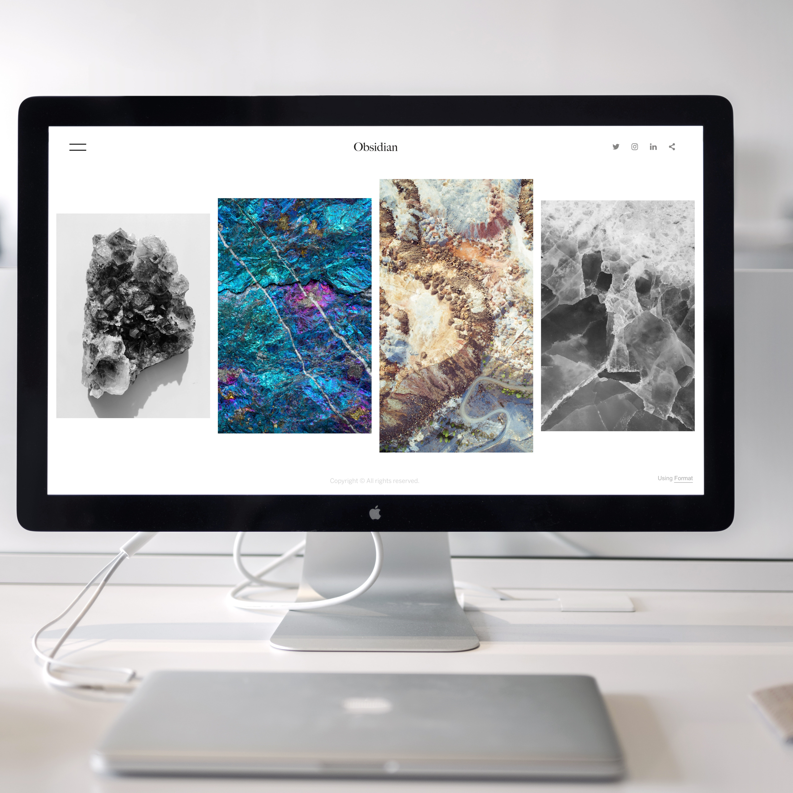

¡Hola! Mi nombre es Ana paula Motta y tengo 21 años. Soy de la carrera Publicidad y Marketing Digital. Actualmente estoy cursando el séptimo ciclo y desarrollé esta web con el fin de compartir mis clases del curso Laboratorio de Innovación 2 :) Elegí esta plantilla ya que me parece mucho más fácil de comprender mis apuntes y simple de entender y ubicar los archivos.

¿Qué es un proyecto de innovación?
Es considerado un plan estratégico para crear un nuevo producto o servicio que da una solución distinta a cualquier problema. Esto se hace porque se nos ocurrió una solución mas eficiente o porque quizá no había solución hasta el momento. El beneficio de los proyectos de innovación es que mejoran la calidad de vida.
La innovación existe básicamente para dar una mejor calidad a nuestra realidad y avanzar tecnológicamente.

¿Cuáles son las características de un proyecto de innovación?
Ser original: dar una solución creativa
Especifidad: tenemos que solucionar algo puntual
Autonomía: se debe solucionar nuestro problema con recursos que estén al alcance.
Investigación: recolección de data que nos ayude
Participación: con colaboración pueden surgir mejores resultados.
Hay diferentes tipos de proyectos:
1. Innovador Tecnológico: crear, modificar o adaptar a un producto o servicio tecnológico empresarial o social.
2. Innovador Educativo: Plantear nuevos métodos de enseñanza y aprendizaje.
3. Ecológico: Desarrollar un proyecto sostenible para conservar recursos naturales.
Clase 2: Gestión de proyecto
¿Por qué es importante una bitácora? Nos deja registrar todos los cambios o acciones que realizamos en nuestro proyecto de innovación para un mejor manejo y organización.
Blogs:
Es un sitio web más personal donde publicamos o hablamos de lo que queremos. Se publica texto o artículos de diferentes autores.
Web:
Su verdadero nombre es World Wide Web. El navegador se comunica con el servidor para crearse.
Redes sociales:
Son sitios o aplicaciones que permiten intercambiar información entre las personas mismas o empresas.
Contenido audiovisual:
Cualquier archivo que contenga imágenes o audios que se puedan transmitir. También incluye contenido cinematográfico, televisión, radio o fotografía.
Reporte de avance de clase:
Es básicamente un documento lleno de la información y resultados de nuestro curso o investigación. Sirve para dar conclusiones sobre nuestro tema y que pueda ser evaluado.
Documentación:
Es recopilar datos específicos de un tema que sirve como soporte para relatar una circunstancia.
Notas de clase:
Resumen de temas que vemos en clase que nos sirven para estudiar.
¿Dificultades o obstáculos?
Los obstáculos son todo lo que dificulta una acción, mientras que dificultad es un problema que surge al intentar hacer algo.
Comentarios & conclusiones:
Un comentario es una apreciación, mientras que una conclusión es básicamente un resumen o lo más importante acerca de lo que estamos viendo.
Clase 3 y 4: Interfases
¿Qué es un sitio web? Es un espacio digital en internet con distintos documentos como fotos videos textos, etc. Sirve para dar vida en linea a una marca, servicio, producto o empresa. Necesita un posting que se relaciona con un dominio que es básicamente el nombre del sitio para ser visibles en internet.
¿Qué es un dominio?
Es el nombre y dirección de tu web.
¿Qué es el hosting?
Es el espacio físico que ocupa tu web. Es una computadora o servidor que se contrata en una empresa de alojamiento. Algunos ejemplos pueden ser HostGator o Bluehost.
¿Qué es un editor?
Es un programa que permite modificar los archivos digitales compuestos únicamente por textos sin formato, que son conocidos como archivos de texto o texto plano. Los editores de texto están dentro del sistema operativo o en un paquete de software y se utiliza como para crear o cambiar archivos de texto como los archivos de configuración, lenguaje de programación o código fuente de un programa. Un ejemplo puede ser Visual Studio Code (el que actualmente trabajamos en clase).

Web estática vs web dinámica
Una web dinámica tiene aplicaciones dentro de la misma web. Hay mayor interactividad con la persona que está navegando. Mientras que una estática solo se dedica a mostrar información permanente. Es bien limitado y no se puede interactuar.
Interfases y lenguaje de programación para diseño web de Google Sites
Google Sites es una app online que te permite crear un sitio web de forma rápida y sencilla, Permite mostrar diferente info en un mismo lugar, Como es una app colaborativa como todas las de google, permite compartir info y decidir quiénes pueden ver y quiénes no. Tienes más control en todo momento.

© Untitled. Design: HTML5 UP.